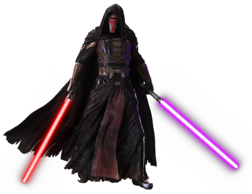

Darth Malak, um Lorde Negro dos Sith e aprendiz de Darth Revan, soltou a
armada Sith contra a República Galáctica. A ação de Malak deixa os Jedi amedrontados e
vulneráveis; muitos Cavaleiros Jedi morrem na batalha e outros se aliam à Malak.
Mas quem
é Darth Malak?...😕
Malak foi um Cavaleiro Jedi chamado Alek Squinquargesimus que passou para o Lado Sombrio da Força após ser seduzido por ensinamentos Sith durante as Guerras Mandalorianas. No fim da guerra, ele e seu amigo Revan lideraram suas forças militares combinadas nas Regiões Desconhecidas, onde eles fundaram um poderoso novo Império Sith para combater a frágil República Galáctica.
Malak confronta seu mestre, achando que pode superá lo em combate. No combate, Darth
Revan acaba desferindo um golpe, que acaba arrancando seu maxilar.
A mandíbula de Malak foi removida por um golpe de sabre de luz de Darth Revan,
forçando-o a usar uma grande prótese de metal.
Revan foi um Cavaleiro Jedi Humano que sucumbiu ao lado sombrio durante as Guerras Mandalorianas. Tendo grandes habilidades táticas, ele liderou a República Galáctica até a vitória sobre os Mandalorianos. Mas após a guerra, ele assumiu o título de "Lorde Negro dos Sith", fundando um poderoso Império Sith, e colocou suas forças contra a República, gerando o conflito conhecido como a Guerra Civil Jedi.
